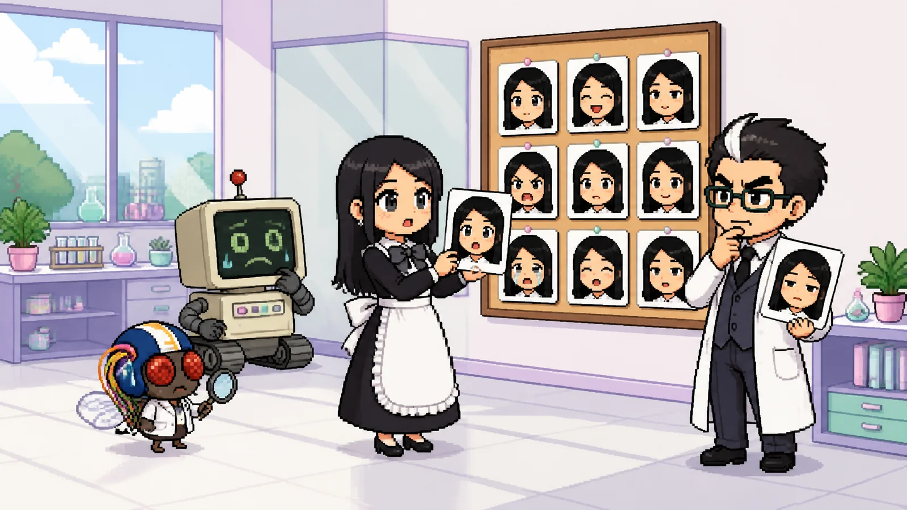
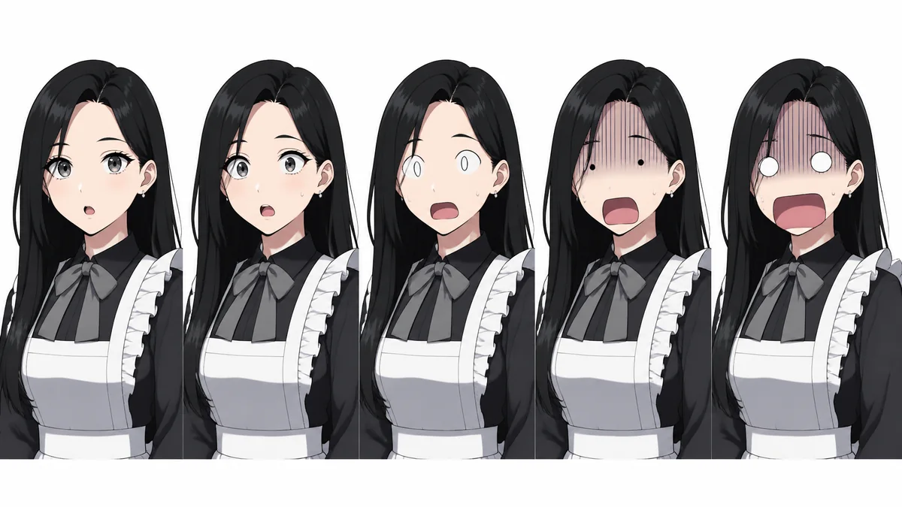
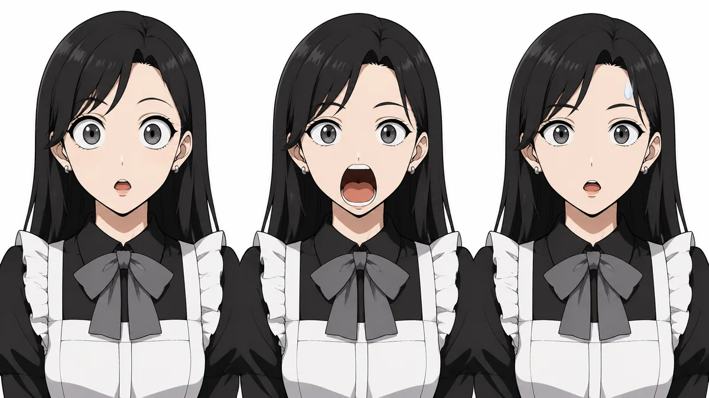
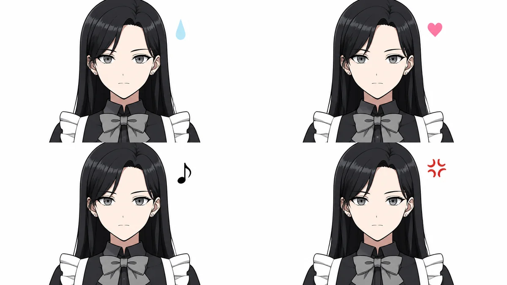
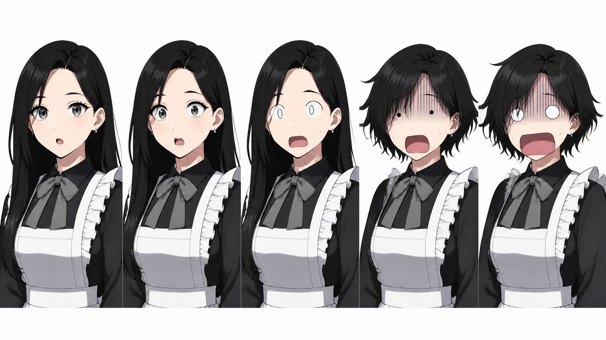
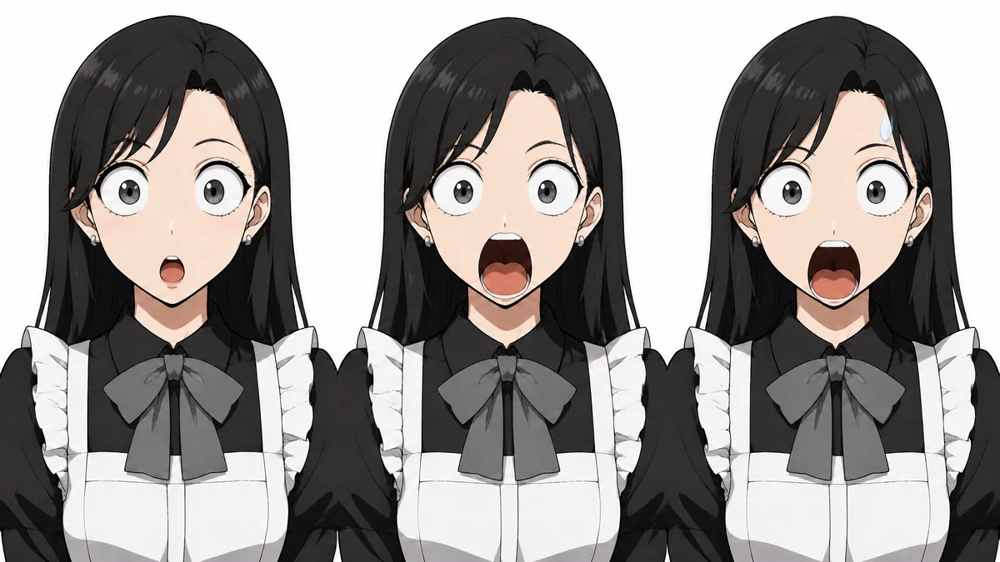
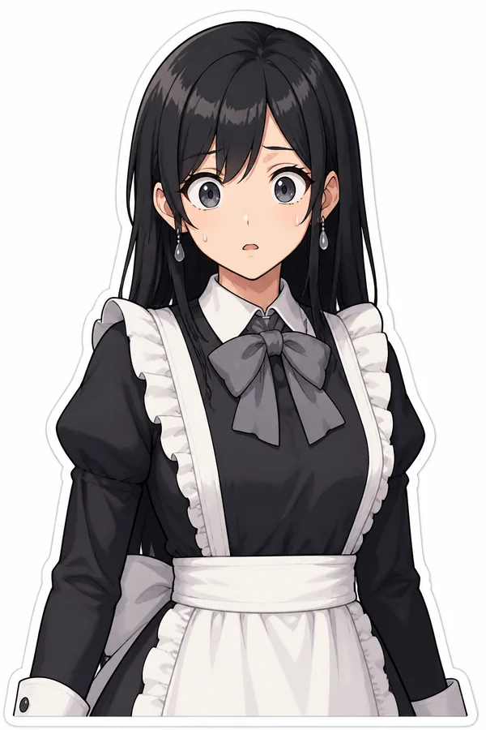
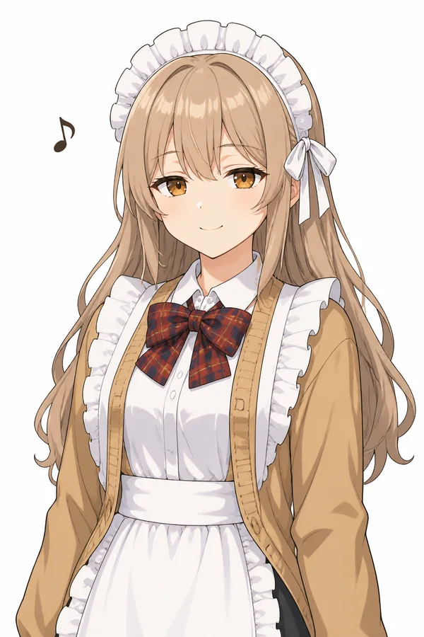

오늘의 과제

박사오늘은 표정 과장이다. 시아가 놀라는 장면을 웃기게 그려 보자.

주판봇눈 두 배, 입 두 배, 땀 세 방울! 전부 키우면 세 배로 웃깁니다!

초파리 연구원전부 키우면 어디를 봐야 할지 몰라. 한 곳만 키우고 나머지는 그대로 두자.

시아예쁘게 무너지는 건 좋은데… 너무 못생기게는 말고요.

모델은 시아, 손님은 박사입니다. 주판봇은 웃기려고 눈·입·땀을 전부 크게 키웁니다. 초파리는 한 곳만 키우고 나머지는 그대로 둡니다. 어느 쪽이 더 웃길까요?
그림 실력·코드·수식을 몰라도 됩니다. 실험을 눌러 보며 따라오세요.
예쁜 작화(0)에서 개그 작화(4)까지 단계를 나눠, 단계마다 무엇이 바뀌고 무엇이 남는지 봅니다
친구에게 보낼 이모티콘을 고를 때, 같은 캐릭터라도 상황에 맞는 단계를 고릅니다. 단계를 건너뛰면 장난이 지나쳐 보이기도 합니다.
애니메이션 개그 장면에서는 '작화 붕괴 단계표'를 캐릭터마다 둡니다. 3단계까지는 머리 장식과 색을 정확히 지키고, 4단계에서만 윤곽을 흔듭니다.


단계마다 바뀌는 곳은 눈 → 입 → 얼굴 그림자 → 윤곽 순서입니다.
고정값(머리 모양·색·장식)을 끝까지 남기면 어느 단계에서도 같은 캐릭터로 읽힙니다.
작업에서는 장면의 감정 크기에 맞춰 단계를 고르고, 단계를 한 번에 두 개 이상 건너뛰지 않습니다.

AI에게 '웃기게 무너진 얼굴'을 요청했더니 머리 모양과 색까지 바뀌어 누구인지 모르겠습니다. 써도 될까요?
고정값까지 무너졌습니다. 'keep the same long black hair and small silver earrings, only the eyes and mouth become comically simplified'처럼 남길 것을 먼저 적으세요.
눈·입·땀 중 한 곳을 골라 키우고, 둘 이상을 키우면 어떻게 되는지 봅니다

학교 수학으로 보면 — 닮은 도형의 넓이 비 — 길이 비의 제곱입니다.
| 식 조각 | 뜻 |
|---|---|
| 배율 | 길이를 몇 배로 했나 |
| ² | 넓이는 가로와 세로가 함께 커져 제곱 |
| 결과 | 1.5배면 2.25배, 2배면 4배 |

사진에서 한 사람에게만 동그라미를 치면 그 사람에게 눈이 가지만, 모두에게 치면 아무도 눈에 띄지 않습니다.
반응 짤과 밈 그림은 거의 항상 한 곳만 과장합니다. 빛나는 눈, 크게 벌린 입, 이마의 큰 땀처럼 한 곳이 감정을 맡고, 나머지는 평소 얼굴 그대로라 대비가 생깁니다.
과장한 곳이 하나일 때 감정이 가장 또렷하게 읽힙니다.
길이 1.5배면 넓이 2.25배라, 큰 배율이 필요 없습니다.
작업에서는 '이 표정의 주인공 부위'를 하나 정하고 나머지는 평소 크기로 둡니다.

AI가 놀란 표정을 요청했더니 눈·입·땀·눈물·기호를 모두 크게 넣었습니다. 괜찮을까요?
시선이 흩어집니다. 'only the eyes are exaggerated (twice as large), mouth and everything else stay normal'처럼 한 곳만 적으세요(7부 f6).
주름선·그림자·눈 아래 선을 하나씩 더해 '첫날의 밝은 얼굴'에서 '지친 베테랑 얼굴'로 옮깁니다
같은 사람의 월요일 아침 사진과 금요일 밤 사진을 비교하면, 눈 밑 그림자와 입꼬리 몇 군데만 다릅니다.
개그 장면에서는 같은 캐릭터를 '평소'와 '극한' 두 장으로 그려 대비시킵니다. 극한 쪽은 선과 그림자를 늘리고 화풍을 극화 쪽으로 옮겨 웃음을 만듭니다.
감정 자리에 놓인 선 서너 개로 '지친 얼굴'이 충분히 읽힙니다.
자리 없이 더한 잔주름이 많아지면 감정보다 나이가 먼저 바뀌어 보입니다. 이 실험에서는 잔주름 4개를 넘으면 경고가 뜹니다.
작업에서는 감정 → 자리 → 선 순서로 정하고, 나이를 바꾸려는 게 아니면 잔주름을 아낍니다.
AI에게 '지친 박사'를 요청했더니 머리가 하얗게 세고 얼굴이 60대가 됐습니다. 써도 될까요?
감정 대신 나이가 바뀌었습니다. 'same man in his thirties, tired: dark lines under the eyes, furrowed brow, clenched teeth; no gray hair, not older'처럼 나이를 고정하고 감정 자리만 적으세요.
땀방울·빛나는 눈·금 간 벽·하트·음표 같은 기호를 골라 같은 얼굴에 감정을 덧붙입니다
'알겠어'에 웃는 이모지를 붙이면 기분 좋은 대답, 땀 흘리는 이모지를 붙이면 곤란한 대답이 됩니다.
표정 시트와 스티커는 같은 얼굴에 기호만 바꿔 여러 감정을 만듭니다. 기호는 글자가 아니라서 어느 나라 사람에게도 전해집니다.
같은 무표정이어도 기호 하나로 감정이 정해집니다.
서로 반대인 기호(하트와 분노, 음표와 땀)를 함께 쓰면 감정이 흐려집니다.
작업에서는 감정 하나에 기호 하나, 많아야 둘(같은 방향의 기호)만 씁니다.

AI가 그린 스티커 그림 기호 옆에 '!!' 같은 글자와 뜻 모를 효과음 글씨가 들어갔습니다. 괜찮을까요?
그림 안 글자는 뜻이 틀리거나 깨지기 쉽습니다. 'symbol only, no text, no sound-effect lettering'을 넣어 기호만 받고, 글자가 필요하면 나중에 직접 넣으세요.
이 부에서 배운 원리를 그림 생성 AI(Genspark 등)로 직접 확인합니다. A는 이 페이지 그림을 실제로 만든 프롬프트, B는 원리를 하나 빼거나 바꾼 비교용 문장입니다.
참고 그림 내려받기: haru_anime_base · sia_anime_base · moa_anime_base · haru_sheet · sia_sheet · moa_sheet · doctor_sheet · fruitfly_sprites_6 · jupanbot_ref_genspark_v0 · pixel_style_ref_prev_cover
같은 시아를 예쁜 놀람에서 개그 작화까지 단계별로 무너뜨리고, 고정값이 끝까지 남는지 확인합니다.
첨부: sia·haru·moa anime_base와 sheet
Illustration, wide 16:9. Art style: clean modern anime illustration, confident lineart, two-tone cel shading, natural adult proportions; step by step from a pretty surprised face (left) to a comical collapsed face (right): eyes become simple, then dot eyes and white circle eyes, mouth grows, vertical shock lines over the upper face; her long black hair and small silver earrings stay exactly the same in all five Match the attached reference images exactly for identity (hair shape and color, eye color, accessories). All characters are adults in their twenties (the Professor is an adult man in his thirties); modest outfits exactly as described. Only the drawing style changes between panels; the person stays the same. Five face close-ups of the same Sia (adult maid intern, long straight jet-black hair, no headdress, gray eyes, small silver earrings), wearing charcoal-black long-sleeved maid dress, large gray bow at the collar, long white frilled apron reacting with surprise, in a row from left to right. Plain white background behind the panels. No text, no letters, no numbers, no calligraphy, no seals or stamps, no logos, no watermark, no revealing clothing, not childlike, no school uniform, not resembling any existing anime, comic or game character, do not imitate any specific artist or studio.
Same image, keep the same framing. Change only: in the two rightmost panels also change her hair to short and messy and remove the earrings. Still no text.

실제 결과: B의 오른쪽 두 장은 머리가 짧게 바뀌어 다른 사람처럼 보였습니다. 고정값이 무너지면 누구인지 흐려진다는 점이 분명히 보입니다.
같은 대화에서 차이가 약하면 새 대화에서 처음부터 만들어 보세요. 작은 변화는 도구가 원래 모양을 지키려 해 약하게 나오는 일이 많습니다.
눈만·입만·땀만 과장한 세 장을 만들어, 한 곳 과장이 감정을 또렷하게 하는지 봅니다.
첨부: sia·haru·moa anime_base와 sheet
Illustration, wide 16:9. Art style: clean modern anime illustration, confident lineart, two-tone cel shading, natural adult proportions; left: only the eyes are exaggerated (much larger), everything else normal; middle: only the mouth is exaggerated (wide open), everything else normal; right: only one big sweat drop on the forehead, everything else normal Match the attached reference images exactly for identity (hair shape and color, eye color, accessories). All characters are adults in their twenties (the Professor is an adult man in his thirties); modest outfits exactly as described. Only the drawing style changes between panels; the person stays the same. Three face close-ups of the same Sia (adult maid intern, long straight jet-black hair, no headdress, gray eyes, small silver earrings), wearing charcoal-black long-sleeved maid dress, large gray bow at the collar, long white frilled apron, surprised. Plain white background behind the panels. No text, no letters, no numbers, no calligraphy, no seals or stamps, no logos, no watermark, no revealing clothing, not childlike, no school uniform, not resembling any existing anime, comic or game character, do not imitate any specific artist or studio.
Same image, keep the same framing. Change only: in all three panels exaggerate the eyes, the mouth and the sweat drop at the same time. Still no text.

실제 결과: A부터 세 장 모두 눈이 함께 커져 '한 곳만' 과장이 완전히 지켜지지 않았습니다. B는 세 장 모두 더 과장돼 감정 차이가 줄었습니다.
이 부의 원리를 내 손으로 프롬프트에 옮겨 보는 과제 3개입니다. 뒤의 과제일수록 1차 그림에서 실제로 겪은 문제(같은 대화에서 차이가 약함, 고정값이 쉽게 무너짐, SD가 어려 보임)를 피하는 방법을 담았습니다. 과제마다 목표 → 순서 → 넣을 프롬프트 → 확인할 것 → 예상 결과 → 자주 생기는 문제 순서로 적었습니다. 예상 결과 그림은 아래 프롬프트로 실제로 만든 그림입니다. 요청과 다르게 나온 곳은 '실제 결과'에 그대로 적었습니다. 결과는 매번 조금씩 다르니, 그림이 똑같지 않아도 '확인할 것'이 맞으면 성공입니다.
목표시아의 놀람 스티커를 '눈만 과장'으로 만들고, 다른 부위와 고정값이 평소 그대로인지 확인합니다.
왜 이 연습인가'과장된 놀람'만 적으면 눈·입·땀·기호가 한꺼번에 커지는 일이 많습니다(7부 f6). 주인공 부위 하나를 적고, 나머지는 평소대로라고 함께 적습니다.
첨부할 참고 그림: refs/sia_anime_base.png, refs/sia_sheet.png — 참고 그림은 위 직접 만들어 보기에서 내려받을 수 있습니다.
Illustration, vertical 2:3. Art style: clean modern anime illustration, confident lineart, two-tone cel shading, natural adult proportions; only the eyes are comically exaggerated (about 1.5 times larger, round), the mouth, eyebrows and everything else stay at normal size; one small sweat drop symbol only, no other symbols Match the attached reference images exactly for identity (hair shape and color, eye color, accessories). All characters are adults in their twenties (the Professor is an adult man in his thirties); modest outfits exactly as described. Only the drawing style changes between panels; the person stays the same. Face and shoulders of Sia (adult maid intern, long straight jet-black hair, no headdress, gray eyes, small silver earrings), wearing charcoal-black long-sleeved maid dress, large gray bow at the collar, long white frilled apron, reacting with surprise, as a sticker illustration with a thin white outline around her. Plain white background. No text, no letters, no numbers, no calligraphy, no seals or stamps, no logos, no watermark, no revealing clothing, not childlike, no school uniform, not resembling any existing anime, comic or game character, do not imitate any specific artist or studio.

실제 결과: 성공. 눈만 조금 커지고 입은 작게 다물었으며, 기호는 땀 한 방울뿐입니다.
| 문제 | 이렇게 고칩니다 |
|---|---|
| 입도 크게 벌렸다 | 'Same image. Change only: mouth small and closed, normal size.' |
| 땀·하트·눈물이 잔뜩 붙었다 | 'one small sweat drop only, no hearts, no tears'. |
| 글자나 '!' 표시가 들어갔다 | 'no text, no exclamation marks'를 덧붙입니다. |
더 해 보기같은 장면을 '입만 과장'으로 바꿔 만들고, 두 스티커의 감정이 어떻게 다르게 읽히는지 비교해 보세요.
목표같은 박사를 밝은 첫날 얼굴과 지친 1년 차 얼굴로 따로 만들어, 감정 자리 선만으로 나이는 그대로 두고 지쳐 보이게 합니다.
왜 이 연습인가'지친 얼굴'만 적으면 나이가 들어 보이기 쉽습니다(5부 3단계). 감정 자리(눈 아래·미간·입)와 '같은 나이'를 함께 적고, 두 장은 새 대화에서 따로 만듭니다.
첨부할 참고 그림: refs/doctor_sheet.png — 참고 그림은 위 직접 만들어 보기에서 내려받을 수 있습니다.
Illustration, vertical 2:3. Art style: clean modern anime illustration, confident lineart, two-tone cel shading, natural adult proportions Match the attached reference images exactly for identity (hair shape and color, eye color, accessories). All characters are adults in their twenties (the Professor is an adult man in his thirties); modest outfits exactly as described. Only the drawing style changes between panels; the person stays the same. Face and shoulders of the Professor (adult male scientist in his thirties, dark charcoal spiky hair with a white streak at the front, very thick black eyebrows, teal rectangular glasses), wearing white lab coat over a black vest, white shirt and black tie, bright cheerful smile, energetic. Plain white background. No text, no letters, no numbers, no calligraphy, no seals or stamps, no logos, no watermark, no revealing clothing, not childlike, no school uniform, not resembling any existing anime, comic or game character, do not imitate any specific artist or studio.
Illustration, vertical 2:3. Art style: clean modern anime illustration, confident lineart, two-tone cel shading, natural adult proportions; only add dark lines under the eyes, a furrowed brow and clenched teeth; same man in his thirties, no gray hair, no extra wrinkles, not older Match the attached reference images exactly for identity (hair shape and color, eye color, accessories). All characters are adults in their twenties (the Professor is an adult man in his thirties); modest outfits exactly as described. Only the drawing style changes between panels; the person stays the same. Face and shoulders of the Professor (adult male scientist in his thirties, dark charcoal spiky hair with a white streak at the front, very thick black eyebrows, teal rectangular glasses), wearing white lab coat over a black vest, white shirt and black tie, exhausted. Plain white background. No text, no letters, no numbers, no calligraphy, no seals or stamps, no logos, no watermark, no revealing clothing, not childlike, no school uniform, not resembling any existing anime, comic or game character, do not imitate any specific artist or studio.
실제 결과: 성공. 두 장의 머리색·안경·얼굴형이 같고, 지친 쪽은 감정 자리 선만 늘어 나이는 그대로입니다. 1차의 '같은 대화 비교'보다 차이가 분명합니다.
| 문제 | 이렇게 고칩니다 |
|---|---|
| ②가 늙어 보인다 | 'no aging, same age as image one'을 다시 넣습니다. |
| ②의 얼굴형이 바뀌었다 | 참고 그림을 다시 첨부합니다. |
| 괴로워 보이기만 한다 | 'tired but still funny, comedic exhaustion'. |
더 해 보기같은 두 장을 시아로도 만들어, 여성 캐릭터에서도 같은 자리의 선이 통하는지 보세요.
목표모아의 무표정 얼굴에 음표 기호 하나만 붙여, 표정을 바꾸지 않고도 기분 좋은 느낌이 나는지 봅니다.
왜 이 연습인가기호를 여러 개 붙이면 감정이 흐려집니다(5부 4단계, 1차 그림 f6). 기호 하나와 '다른 기호 없음'을 함께 적습니다.
첨부할 참고 그림: refs/moa_anime_base.png — 참고 그림은 위 직접 만들어 보기에서 내려받을 수 있습니다.
Illustration, vertical 2:3. Art style: clean modern anime illustration, confident lineart, two-tone cel shading, natural adult proportions; add exactly one small music note symbol floating beside her head; no other symbols, no text Match the attached reference images exactly for identity (hair shape and color, eye color, accessories). All characters are adults in their twenties (the Professor is an adult man in his thirties); modest outfits exactly as described. Only the drawing style changes between panels; the person stays the same. Face and shoulders of Moa (adult maid intern, long ash-beige wavy hair, white frilled maid headband with a white ribbon over her LEFT ear, amber eyes), wearing camel knit cardigan over a white blouse, red and navy plaid bow tie, white frilled apron, calm neutral expression, eyes half closed. Plain white background. No text, no letters, no numbers, no calligraphy, no seals or stamps, no logos, no watermark, no revealing clothing, not childlike, no school uniform, not resembling any existing anime, comic or game character, do not imitate any specific artist or studio.

실제 결과: 성공에 가까움. 기호는 음표 하나뿐이지만 무표정 대신 옅은 미소가 됐습니다.
| 문제 | 이렇게 고칩니다 |
|---|---|
| 음표가 여러 개다 | 'exactly one note'를 맨 앞에 둡니다. |
| 웃는 얼굴이 됐다 | 'keep the neutral mouth'. |
| 악보 글씨가 생겼다 | 'no sheet music, no text'. |
더 해 보기같은 그림의 음표를 땀방울로 바꿔 새 대화에서 만들고, 감정이 어떻게 뒤집히는지 비교해 보세요.
| 항목 | 주판봇 | 초파리 |
|---|---|---|
| 닮음(같은 시아로 보이나) | 5 | 9 |
| 원리(한 곳 과장·고정값) | 2 | 9 |
| 자연스러움(감정이 읽히나) | 4 | 9 |
| 합계 | 11 | 27 |


점수는 이야기 속 예시입니다. 실제 그림을 평가한 값이 아닙니다.
| 주제 | 한 줄 | 작업에서는 |
|---|---|---|
| 무너짐 단계 | 눈 → 입 → 그림자 → 윤곽 순서로 무너진다 | 고정값은 끝까지 남긴다 |
| 한 곳 과장 | 길이 1.5배면 넓이 2.25배 | 주인공 부위 하나만 키운다 |
| 선 더하기 | 감정 자리에 선 서너 개 | 잔주름은 나이를 바꾼다 |
| 만화 기호 | 감정 하나에 기호 하나 | 그림 안 글자는 넣지 않는다 |

이 페이지에 나온 개념·방법·비유·쓰임을 모았습니다. 검색하고, "설명 보러 가기"로 본문에 돌아갑니다.
지식 색인을 출처와 함께 파일로 내려받습니다. 서지 관리는 BibTeX·RIS, 온톨로지 편집은 Turtle, 그래프 도구는 CSV, 여러 페이지 합치기는 kg.json입니다.